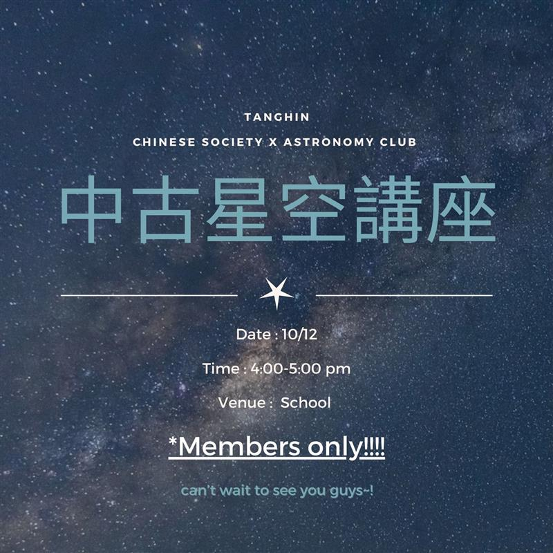
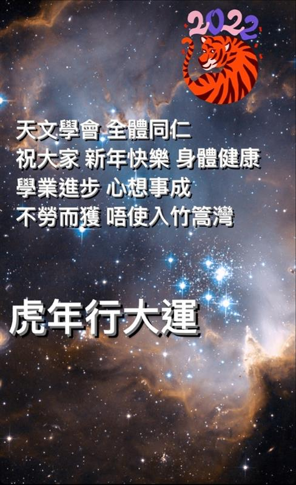
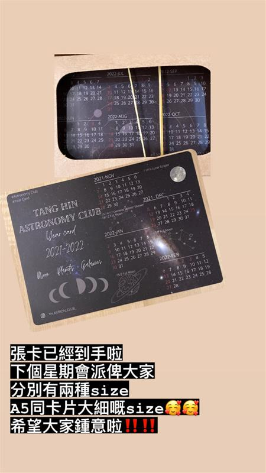
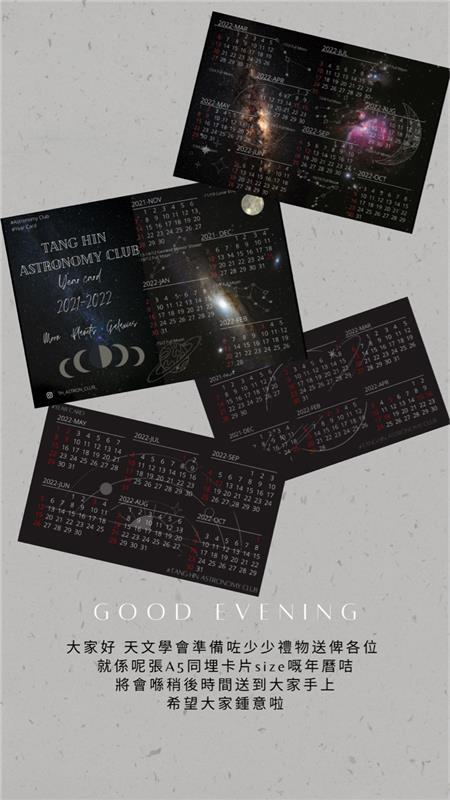
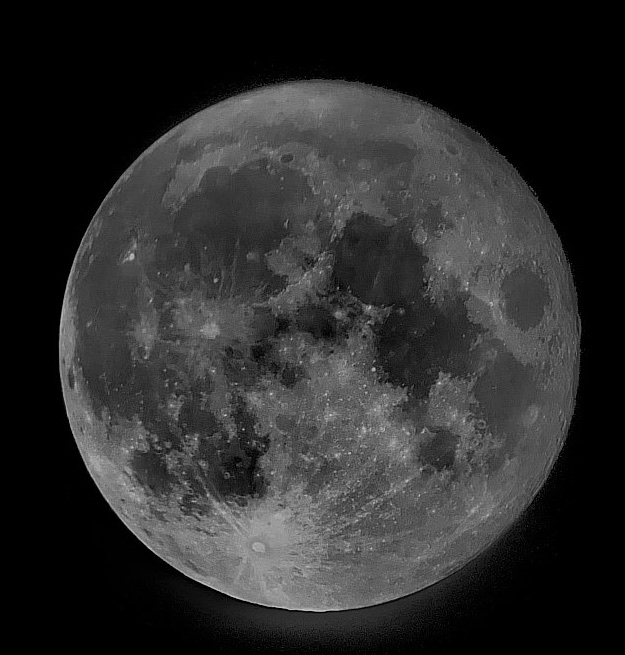
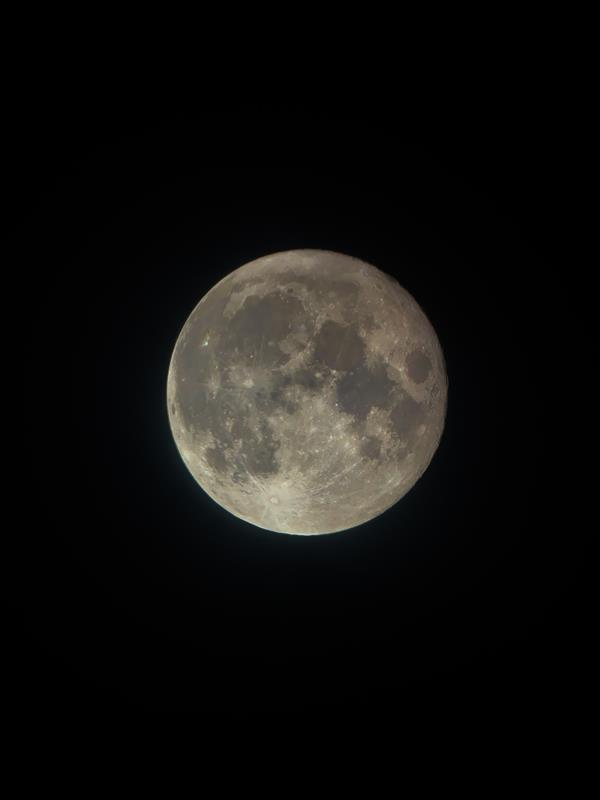

Introduction
Welcome to our website!
This is the home page, discover it and you will find more!
Announcement

Post Time: 2021/11/27
Posted by: Wong Chun Fung
2nd Activity Stargazing
Hola!!!天文學會將會喺12月10號舉行第一次觀星活動！！！🌌🌌
如果大家想睇星嘅記得踴躍報名參加!!🤤
*所有參加者贈送星圖一張
For more detail please refer to the activity page

Post Time: 2021/11/27
Posted by: Wong Chun Fung
中文學會 x 天文學會 中古星空講座
大家經常看上天空總會看到滿天繁星🌟
這次天文學會聯同中文學會合辨中古星空講座為大家介紹黃道12宮
而且這次活動在觀星活動前 好讓同學可以更了解滿天繁星的運作
For more detail please refer to the activity page

Post Time: 2021/11/12
Posted by: Wong Chun Fung
2nd Activity 天球星空講座
大家旅行唔知玩得開唔開心呢,無論開心又好好攰也好都唔緊要
因為天文學會又有新攪作啦-天球星空講座.
唔知道大家平時會唔會留意個天呢🤔🤔
咁如果大家平時有冇留意個天嘅話會唔會想知道個天係點運作嘅呢🤤
如果大家唔知但係又有興趣嘅話就一定要嚟呢一個講座啦
我哋除咗個天嘅運作之外仲會介紹天上面唔同嘅星星
For more detail please refer to the activity page

Post Time: 2022/3/7
Posted by: Wong Chun Fung
暑假版 <<<天文冷知識>>>【EP1 😵💫百年迷思：天文VS氣象？】
登登登登登 第一個天文冷知識嚟啦
<<<天文冷知識>>>【EP1 😵💫百年迷思：天文VS氣象？】
下個星期就係春天嘅暑假喇，留係屋企，不妨望出窗，睇下有咩特別嘅發現！天文學會亦會逢一、四介紹啲唔同嘅天文知識比大家，記得留意啦！
【天文定氣象？】
一提起天氣，大家會諗起「香港天文台」，又會同天文混淆咗，天文同氣象究竟點分呢？
「天文」簡單嚟講係指地球大氣層出面嘅天體、星球，好似太陽、月球等等。就好似我地平時嘅post，月蝕、地照，都係有關於大氣以外嘅知識。
「氣象」就相反係指大氣層入面嘅天氣現象，好似雲、雨、颱風等等，就例如地理科教嘅氣壓、降雨都係屬於氣象，比較貼近日常生活。
而「香港天文台」雖然叫天文台，但其實「天文」、「氣象」佢都有資訊提供比大家㗎！
考下大家：紫外線指數係天文定氣象類呢？
Post Time: 2022/2/19
Posted by: Wong Chun Fung
話說如果大家有啲咩天文知識想知道想我哋介紹嘅可以喺下面留言話俾我哋知
我哋盡量出post解答大家
Post Time: 2022/2/19
Posted by: Wong Chun Fung
天文知識 地照 #天文現象
疫情嚴重 大家都冇得出街冇得周圍去 咁我相信大家應該都會喺屋企望吓個天掛 如果有嘅話大家應該會留意到有陣時我哋睇到個月亮嘅時候唔係全部黑晒嘅 可能會有少少光
咁呢一種天文現象其實叫做 #地照
-
地照（Earthshine），係地球將陽光反射到月球表面，照亮月亮黑暗部分的現象。呢啲光係我哋眼中其實已經反射左兩次，分別係比地球反射左同埋被月球反射左，所以大家會見到呢啲光嘅時候會覺得月球另一邊係好暗。咁呢一個天文現象就叫做地照。
地照令到我哋可以更好咁樣觀察月球嘅地面情況，所以其實係好有用。
#有啲乜嘢天文知識想知嘅再同我哋講啦
#online活動不日推出
#好想快啲有實體
Post Time: 2022/2/3
Posted by: Wong Chun Fung
重要!中三同學留意
另外中三嘅同學應該係未收到件T嘅 因為疫情之前我未得閒派
所以大家而家會有兩個方法
第一 等復課我再俾大家
第二 我會之後新年假期完咗之後搵一日返去學校度等大家比件T大家
大家如果覺得第一個方法好啲嘅就比like啦
第二個方法好啲嘅就比心心
(in teams)
唔該晒🙏🏼🙏🏼

Post Time: 2020/2/3
Posted by: Wong Chun Fung
大家新年快樂 當大家起身嘅時候應該已經係初三赤口㗎喇 記得以和為貴 逗多啲利是

Post Time: 2021/12/2
Posted by: Wong Chun Fung
Post Time: 2021/11/19
Posted by: Ho Nok Chun
Today’s lunar eclipse activity will be CANCELLED due to the cloudy weather.
We hope that we can hold another moon observation event in December.
Post Time: 2021/11/19
Posted by: Ho Nok Chun
I will make an announcement about today’s lunar eclipse activity here.
Participants please pay attention.

Post Time: 2021/11/19
Posted by: Wong Chun Fung
1st Activity Fly me to the moon- Lunar Eclipse 月偏食
Fly me to the moon- Lunar Eclipse 月偏食
*參加者必須接種新型冠狀病毒疫苗
*會因應當天天氣情況而決定會否進行此活動
*會於當日下午三時作最後通知
For more detail please refer to the activity page

Post Time: 2021/11/5
Posted by: Wong Chun Fung
Post Time: 2021/11/3
Posted by: Wong Chun Fung
The following students please stay in classroom in the first recess, committees will come for you. Thank you!!!
1B14 YANG HAOZHE (楊浩哲)
1B23 LI CHIU HEI (利超晞)
1E01 CHAN JACKY (陳彥君)
2A10 RAN ZHUORUI GERRY (冉倬
2A13 TSUI SING YU (徐星宇)
2B06 LIU HO YEUNG EDWARD (劉昊洋)
2B16 YIU CHAI HIM (姚霽謙)
3A15 ZHANG CHAK HANG (張澤恒)
3A20 CHONG HOI KIU (莊凱荍)
3E02 CHEUNG CHEUNG YU (張翔瑜)
3E16 CHAN YAT YIN (陳日妍)
3E27 WENG WING YAN (翁咏昕)
4B13 NG KWOK HEI (吳國熙)
4B35 WONG MING YU (黃銘渝)
4D08 WONG HOK NING (黃學寧)
4D18 IP YAT SUM (葉一心)
4D20 LAW YAN TING NIKI (羅恩婷)
4E11 LIU HO YEE (廖浩而)
4E20 CHAN KA YU (陳嘉瑜)
4E28 NG WING HEI (伍泳希)
5C03 LAU WAI SUM (劉偉森)
5D17 LAU KA SHUEN KATHY (劉嘉璇)
All Form SIX members
Thank you !!!
Post Time: 2021/10/31
Posted by: Wong Chun Fung
大家好,
明天將會有不同的committee向各位收錢,請各位帶備足夠的金錢.
*不設找續
敬請注意
Post Time: 2021/10/31
Posted by: Wong Chun Fung
重要!
聽日向大家收錢嘅committee
1A 1B 1C 4C F6 — 4C王振鋒
1D 1E 2A 2B — 5B萬子杰
2C 2D 2E — 4A張善博
3A 3B — 4A 鄧胤灝
3C 3D 3E —4C 黃露儀
4A 4B —4E伍頌謙
4D 4E — 4A蘇俊銘
5A 5B —5A 黃嘉璇
5C 5D —5B羅建和
Post Time: 2021/10/31
Posted by: Wong Chun Fung
The following students please fill in the E-notices As Soon As Possible!
2A06 LI CHIN MING
2C22 CHOI ON KIU
2C28 WANG CANDY
3A15 ZHANG CHAK HANG
3A20 CHONG HOI KIU
3C27 TSOI UEN CHUN
3D24 MAN KIU
3E02 CHEUNG CHEUNG YU
3E16 CHAN YAT YIN
4A04 HUNG TAK YUI
4A17 FU PUI KIU
4B13 NG KWOK HEI
4B17 TSUJI KEN ()
4C09 TSUI WAI CHAK
4C28 WONG WING TUNG
4E09 LAU CHUN WAI
4E11 LIU HO YEE
5B09 LEE CHUN HEI
5C11 CHEN YU YAN
6A15 TAO CHUN YIN
.
Thank you🙏🏼🙏🏼

Post Time: 2021/10/28
Posted by: Wong Chun Fung
以防大家唔記得個size 喺度再po多次

Post Time: 2021/10/28
Posted by: Wong Chun Fung
尚有極極極少量名額‼️
請繼續踴躍參加🤤🤤
Post Time: 2021/10/27
Posted by: Wong Chun Fung
重要！Membership Fee!!!
I think all of you have already recieved a E-Notice about Membership fee and the details of buying Member T-shirt.
For those who will not buy Member T-shirt, you have to pay $20.
For those who will buy Member T-shirt, you have to pay $50, and you need to mark down you size under the E-notice.
.
Committee Member will come for and collect membership fee next monday. Thank you!!!!
*Cross boundary students do not need to pay Membership Fee.
*Due to the transportation problem, Cross boundary students cannot buy T-shirt.
.
Feel free to contact me 4C11 Wong Chun Fung or Mr Ho Nok Chun if you have any problems.
.
Thank you!!

Post Time: 2021/10/25
Posted by: Wong Chun Fung

Post Time: 2021/10/21
Posted by: Wong Chun Fung
活動預告!!!!!!!
詳情會喺考試後於Teams IG公布!!!
大家記得俾心機考埋個試跟住再來玩啊!!🤤🤤
Post Time: 2021/10/6
Posted by: Ho Nok Chun
重要！Today's AGM
If you cannot attend the meeting, please send a message to me.
For students who have chinese history extra lesson (3A-3D) this afternoon, I know your case and you do not need to send message.
Post Time: 2021/10/1
Posted by: Wong Chun Fung
重要！
Hello!!!
Due to the delay of the training of ECA Committee training. Our first AGM will be postponed to 17:15.
Sorry for the inconvenience and thank you for your attention.🙏🏼🙇♂️❤️💛💙💚

Post Time: 2021/9/23
Posted by: Wong Chun Fung
Hello Guys,
We are going to hold our first AGM soon.
Date: 6-10-2021
Time:1700-1800
Venue: MS Teams
*All Members must attend!!!
*如果你哋親愛嘅主席冇發神經講廢話就應該唔會遲放
*If you are not avalible please contact me or Mr Ho ASAP.

Post Time: 2021/9/22
Posted by: Wong Chun Fung
中秋滿月
Date: 21-9-2021
Time: 12:23am
Venue: Fanling
Waxing and waning: 100%
Comment:
2021/9/22 Ho Nok Chun: Happy mid-autumn festival! Everyone, enjoy the holiday! xd
Post Time: 2021/9/15
Posted by: Wong Chun Fung
Dear all:
If you are going to buy the T-shirt, please check the size in the attached photo. Our committee will come for you tomorrow and Friday. We will recomfirm your personal information.
Thank you!!!!!
Post Time: 2021/9/13
Posted by: Wong Chun Fung
中學生天文訓練計劃
今日想同大家介紹一個活動，就係由香港太空館主辦嘅中學生天文訓練計劃，你可能會問其實係乜嘢嚟㗎？🤔
咁其實呢個計劃就係想比一啲對天文有興趣嘅中四中五學生參加嘅，而且從中都會學識好多好有用嘅天文知識，咁佢嘅課程就係包括理論課甚至係實體實習課程都有。而且更加重要嘅就係費用全免！
如果大家有興趣知道更多，可以上太空館嘅網站又或者問我。至於進程表同埋課程大綱我已經 attached 左喺下面啦！如果大家想回饋學校，回饋返個學會嘅話，記得一定要參加呀！
Link：https://www.lcsd.gov.hk/CE/Museum/Space/zh_TW/web/spm/activity/education_st.html

Post Time: 2021/9/11
Posted by: Wong Chun Fung
天文冷知識 - 宇宙
由今日開始，天文學會會不停期喺 IG 同 Teams Channel post 一啲唔同嘅天文冷知識！🚀🤤
而第一次嘅天文冷知識係，何謂宇宙？🤔
相信大家同宇宙都會有唔同嘅幻想，究竟天上面嘅星星係乜嘢嚟嘅呢？究竟其實宇宙係點嘅呢？今日會喺度解答大家心中嘅問題。
其實宇宙係咩？
字面上嚟睇：宇指空間，宙指時間。
它包含了行星 e.g. 地球、恆星 e.g. 太陽、星系 e.g. 銀河系、星系際空間 e.g. M42 獵戶座大星雲、次原子粒子（即係比原子更細嘅粒子，例如電子、光子等）以及所有的物質與能量。
（至於上面講緊嗰啲係乜嘢嚟嘅呢之後會有唔同嘅post慢慢介紹🤤）（①②③為次方）
簡單啲咁講，由地球出發，我哋首先會見到嘅就係我哋身處嘅太陽系，而家我哋踏出最遙遠嘅行星海王星之後，我哋就係正式離開太陽系，但係當我哋離開咗太陽系之後，唔代表我哋到達太陽系嘅鄰居㗎，而我哋離開咗太陽系之後其實只會發現太陽只係一個光點。
視野闊度：10①⑤m

再出到去呢我哋就會見到太陽系嘅鄰居，即係半人馬座毗鄰星，佢就距離我哋有4.22光年，即係用光嘅速度行都要行4.22年。
視野闊度：10①⑦m
我哋發現其實除咗太陽系之外，都仲有其他嘅恆星聚集埋一齊嘅，而呢樣嘢我哋就會稱為星團，而最近太陽系嘅星團就係畢宿星團，距離我哋150光年。
視野闊度：10①⑨m

當我哋再踏出一步之後，就會到達銀河系，我哋發現其實太陽係只係整個銀河系之中數千億粒恆星之中嘅其中一粒（遲啲將會有一個 post 係介紹銀河系，所以今日就唔講咁多）
視野闊度10②①m

再踏出一步之後我哋就會發現銀河系其實只係祖先個星系之中嘅其中一個，而我哋身處嘅星團叫做本星星團。
視野闊度10②③m
再出多少少就係成個宇宙旅程嘅終點，而我哋見到嘅就係有唔同星系聚集而成嘅絲狀結構
視野闊度10②⑤m
到最後我哋到達嘅係可觀察宇宙，咦其實我觀察宇宙只係一堆微波輻射。
視野闊度10②⑦m

Post Time: 2021/9/11
Posted by: Wong Chun Fung
MS Form!
The following students please fill in the form as soon as possible. Thank you!
1B33 ZOU LAN (鄒瀾)
2A06 LI CHIN MING (黎展銘)
2A13 TSUI SING YU (徐星宇)
2D09 TSE PAK HIM (謝栢謙)
4A04 HUNG TAK YUI (孔德叡)
4A17 FU PUI KIU (傅珮喬)
4A26 NG YAN HEI IRIS (吳欣希)
4B17 TSUJI KEN ()
4B22 ZHANG SIWEI (張四維)
4B23 ZHUANG CHUN YUEN (莊振遠)
4C06 KONG WING HO (江永豪)
4C19 LIU YUAN BING (劉媛冰)
4C20 PANG KA MAN (彭嘉敏)
4C26 WONG LO YEE (黃露儀)
4C28 WONG WING TUNG (王詠桐)
4D12 YUEN KA KIT (袁嘉傑)
5B01 CHAN PAK HEI (陳柏熹)
5D05 HE KING HUNG (何景鴻)
6A12 LEUNG KA CHAI
6A22 CHEUNG PUI YEE CRYSTAL
6A26 LEUNG SUM YUET
6A28 LO SZE YAU
6B12 TAI CHEUK HIM
6C04 LAI SHING HEI JAYDEN
Link: https://forms.office.com/r/Xppfk57EAE
Post Time: 2021/9/9
Posted by: Wong Chun Fung
Information of first AGM
Next, it’s the time of our FIRST AGM!!!!!!
Date: 6-10-2021
Time: 1700-1800
Venue: MS Teams
Please contact me 4C11 Wong Chun Fung if you are not able to join the AGM.
Please be noticed that you have to be Vaccinated if you want to join outdoor activities. Thank you for your attention and please fill in the form as soon as possible. If you have any question feel free to ask me via WhatsApp or Signal or Teams. My phone numbers 66916356. See you guys in the first AGM.
Post Time:
Posted by: Wong Chun Fung
Welcome!!!!!!
Hello everyone, I am Wong Chun Fung Jeffrey, the Chairperson of the Astronomy Society in 2021-2022. Thank you for joining us. I hope all of you will enjoy our coming activities. Thank you!!!
First, please fill in your basic information in the following MS form. In the form, there is a fashionable society T-Shirt designed by our committee. We hope that every member can wear it when we have outdoor activities to show our passion for astronomy also to take some great photo to keep this value memory. it’s the first year operating this society so all of us want to do something special, it’s the great moment to be one of our members. Each of them costs $30 only. So, why not buy one? Thank you.
Link: https://forms.office.com/r/Xppfk57EAE
Please like this message if you have done the MS form!! Thank you!!
Also for the cross boundary student, you can also order the society T-shirt. We can give you after you come back Hong Kong or send you by SF express ( fee are paid by receiver) Thank you for your attention!!!!